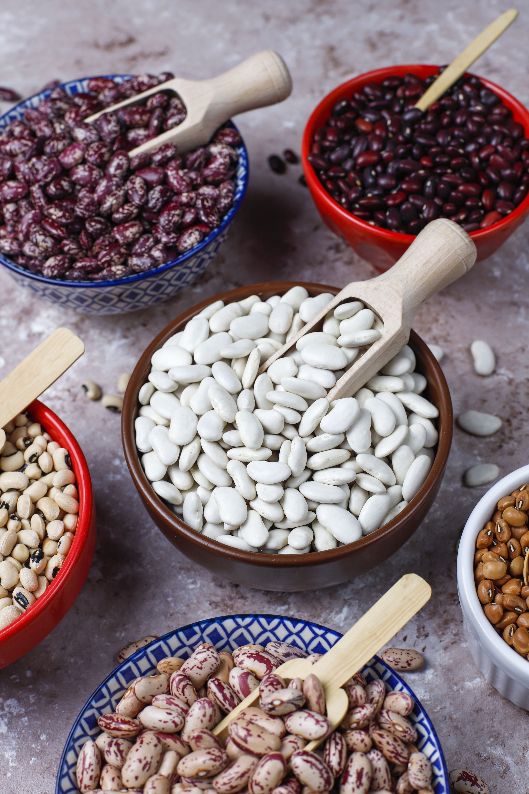

Beans Agriculture

Description
Beans are a vital dual-purpose crop, providing both a valuable source of protein for home consumption and a lucrative cash crop for the local market.
They are excellent for crop rotation because they fix nitrogen back into the soil, improving fertility for the next season.
With proper spacing and timely weeding, beans can thrive well in the Transnzoia climate.
Requirements
- Certified Seeds:Rosecoco (GLP2) or Lyamungu (approx. 15-20kg per acre)
- Fertilizer:DAP (Diammonium Phosphate) for planting
- Spacing:50cm between rows and 15cm between plants
- Weeding:Ensure the field is clear of weeds (2-3 weeks after planting is critical)
Planting Guide (Steps)
- Land Preparation:plough and harrow the land to a fine tilth before the rain starts
- Planting:Plant the seeds about 2-3cm deep. Apply DAP fertilizer in the planting holes, but make sure the seed doesn't directly touch the fertilizer
- Weeding:Do the first weeding 2-3 weeks after germination. Do a second weeding before the flower appears
- Pest Control:Scout the pest like bean flies and aphids. Use recommended insecticides if the infection is high
- Harvesting:Harvest when the pods turn yellow and dry. Sun-dry the beans thoroughly before storage to prevent weevils
Requirements for El Nino Season
- Fast-Maturing Seeds:Choose quick-maturing bean varieties(like certain Rosecoco type) that can be harvested before waterlogging becomes severe
- Raised Beds/Ridges:Prepare raised planting beds to prevent the root from sitting in standing water
- Fungicide:Have broad-spectrum fungicide ready, as heavy moisture causes root rot and fungal diseases
- Good DrainageEnsure trenches are dug around the field to channel excess water away
El nino Planting Guide
- Plant on Ridges:Plant your seeds on the top of ridges or raised beds to keep them above the water level
- Delay if Flooded:Do not plant if soil is already completely waterlogged or if heavy rains are forecasted for exact planting week
- Increase Spacing:Slightly wider spacing can allow more airflow, reducing fungal growth in damp conditions
- Monitor for Disease:Check the plants frequently for signs of root rot, blight or yellowing leaves. Apply fungicide immediately if you spot issues
- Fast Harvest:Harvest as soon as pods mature. Don't leave them in the field too long, or they will rot in the mud